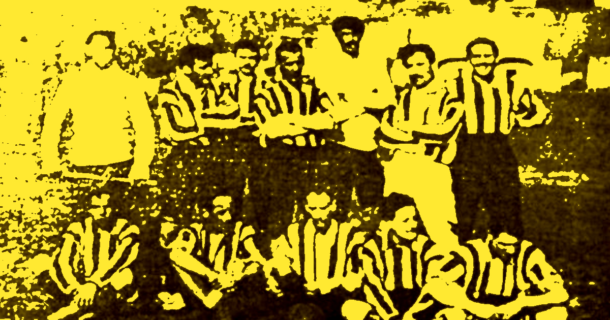

Historia
Ídolos
Scudetto
Contacto
Rivalidades
Historia
Ídolos
Scudetto
Contacto
Rivalidades
La historia del SSC Napoli es una de las más apasionantes del fútbol italiano, marcada por momentos de gloria, crisis profundas y una conexión única con su ciudad. El club fue fundado en 1926 en la ciudad de Nápoles, en el sur de Italia. Durante sus primeras décadas, Napoli tuvo participaciones irregulares en la liga italiana, sin lograr consolidarse como uno de los grandes equipos del país. Todo cambió en los años 80 con la llegada de Diego Maradona en 1984. Su incorporación revolucionó al club y a la ciudad. Bajo su liderazgo, Napoli vivió la etapa más gloriosa de su historia: ganó sus primeros títulos de liga (Serie A) en 1987 y 1990, además de una Copa de la UEFA en 1989. Maradona se convirtió en un símbolo eterno del club y de la identidad napolitana. Tras la salida de Maradona en 1991, el equipo entró en una etapa de declive deportivo y económico que culminó en su quiebra en 2004. Sin embargo, el club renació ese mismo año bajo el nombre de Napoli Soccer, impulsado por el productor de cine Aurelio De Laurentiis. Desde entonces, Napoli comenzó una reconstrucción sólida: ascendió desde las divisiones inferiores hasta volver a la Serie A en 2007. En los últimos años, el club se consolidó nuevamente como uno de los más competitivos de Italia, logrando títulos nacionales y destacándose en competiciones europeas. El punto más alto de esta nueva era llegó en la temporada 2022-2023, cuando Napoli ganó su tercer Scudetto, el primero en más de 30 años, devolviendo la gloria a una ciudad que vive el fútbol con una pasión incomparable. Hoy, el Napoli no es solo un equipo: es un símbolo cultural de Nápoles, representando orgullo, identidad y resiliencia.

Además de los éxitos deportivos, el Napoli se ha convertido en un símbolo de superación para la ciudad de Nápoles. A diferencia de muchos de los grandes clubes italianos, que provienen del norte del país, el Napoli representa al sur de Italia y a millones de aficionados que encuentran en el equipo una fuente de identidad y pertenencia. Esta conexión especial entre el club y su gente ha sido una de las claves de su crecimiento a lo largo de los años. Durante la última década, el Napoli se destacó por desarrollar equipos competitivos y un estilo de juego atractivo, impulsado por jugadores de gran calidad y una gestión deportiva sólida. El club logró consolidarse como protagonista de la Serie A y como un participante habitual en competiciones europeas, enfrentándose a algunos de los mejores equipos del continente. La conquista del Scudetto en la temporada 2022-23 marcó el inicio de una nueva era para la institución, demostrando que el Napoli podía volver a alcanzar la cima del fútbol italiano. Este logro renovó la ilusión de los aficionados y confirmó el crecimiento sostenido del club. Actualmente, el Napoli continúa construyendo su historia, combinando tradición, pasión y ambición, con el objetivo de seguir sumando títulos y dejando una huella cada vez más importante en el fútbol mundial.
A lo largo de su historia, el Napoli ha contado con grandes futbolistas que dejaron una marca importante en la institución. Además de Diego Maradona, figuras como Careca, Marek Hamšík, Edinson Cavani, Dries Mertens y Lorenzo Insigne contribuyeron a mantener vivo el prestigio del club y a consolidarlo como uno de los más importantes de Italia. El estadio del equipo, el Stadio Diego Armando Maradona, es uno de los escenarios más emblemáticos del fútbol italiano. Con capacidad para más de 50.000 espectadores, ha sido testigo de algunos de los momentos más memorables de la historia del club y es reconocido por el ambiente apasionado que generan los aficionados napolitanos en cada partido. El Napoli también se destaca por su trabajo en divisiones juveniles y por la formación de nuevos talentos. A lo largo de los años, ha apostado por combinar jugadores experimentados con jóvenes promesas, permitiendo que el equipo mantenga un alto nivel competitivo tanto en Italia como en Europa. En el plano internacional, el club ha participado en numerosas ediciones de competiciones europeas, enfrentándose a algunos de los equipos más prestigiosos del continente. Estas experiencias han contribuido a aumentar el reconocimiento global de la institución y a expandir su base de seguidores más allá de las fronteras italianas. Actualmente, el Napoli continúa escribiendo nuevas páginas de su historia. Con una afición fiel, una identidad muy marcada y la ambición de seguir creciendo, el club busca mantenerse entre los mejores equipos de Europa y honrar el legado construido a lo largo de casi un siglo de existencia.